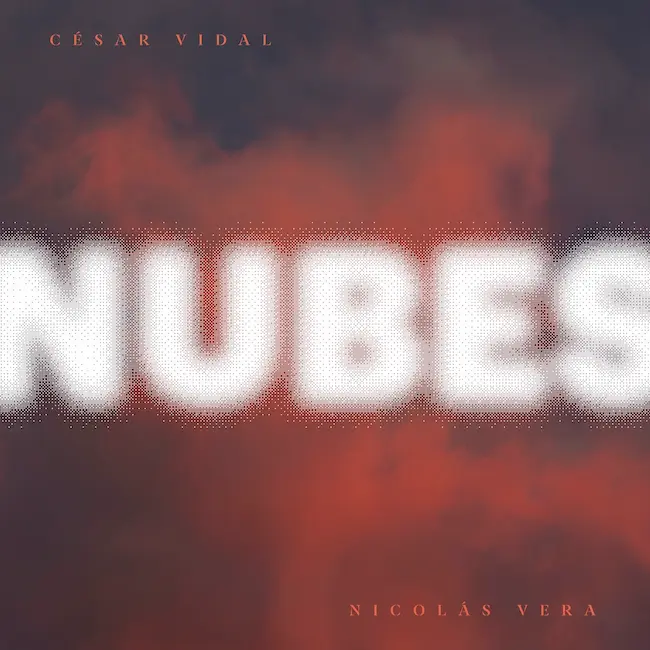

NUBES
NUBES is the first duo album by César Vidal and the renowned Chilean guitarist Nicolás Vera, a prolific musician with over 20 years of experience working in Chile and abroad alongside international artists. Released in Chile as the first album of 2025, NUBES features original compositions by both César and Nicolás.
The project was born from a period of remote collaboration that began in 2022, when César moved to Amsterdam. Between ideas and experiments, the two musicians exchanged recordings and explored various approaches, resulting in the ten tracks that make up the album. NUBES represents the first collaboration between two musicians of different generations, yet with similar artistic ambitions.
The music of NUBES is characterized by an airy, fluid quality, with a temporal structure inspired by the behavior of clouds, “nubes” in Spanish, which inspired its title. In addition to acoustic elements, the album incorporates electronic textures, effects produced by analog machines, synthesizers, and subtle sound manipulations. The album was recorded, mixed, and mastered by the acclaimed Chilean engineer Gonzalo “Chalo” González, a Latin Grammy nominee whose work includes some of the most iconic recordings in Chilean popular music.
Listen to the album: